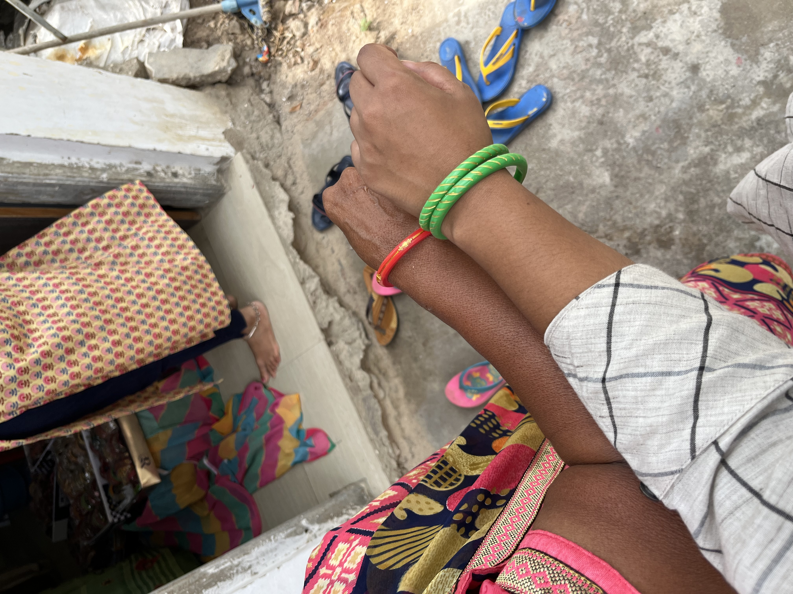

Surili Sheth

Book Project
Making Violence Legible: Dependency, Disclosure, and Institutional Response

Fieldwork in Gujarat, India.
How do people seek redress for violence when the institutions available to them are also invested in preserving the relationships on which they depend? My book project examines how legal and community institutions recognize violence, and how that recognition shapes whether, where, and how people make claims.
The book develops the concept of the dependency trap: claimants may seek protection from institutions that simultaneously reproduce the unequal relationships on which their housing, livelihoods, social status, or other forms of security depend. Under these conditions, institutional responsiveness is not only a question of whether an institution recognizes harm. It also depends on whether institutions can help claimants navigate and reorganize the relationships of dependency surrounding that harm.
I develop this argument through research on domestic violence and institutional claim-making in India. The project draws on fifteen months of ethnographic fieldwork in Gujarat; an in-person survey experiment with more than 2,000 ever-married women; nationally representative survey data on domestic violence and help-seeking; and an original archive of case files from a grassroots women's organization.
Making Violence Legible
A central concern of the book is institutional classification. Experiences of violence do not enter institutions as self-evident legal or administrative categories. Police officers, counselors, community leaders, courts, families, and women's organizations interpret disputes through different institutional logics. These processes shape whether violence becomes visible as a crime, a marital dispute, a claim for maintenance, a family problem, or something else entirely.
I use these processes of classification to study the relationship between disclosure, institutional recognition, and measurement. Cases that do not appear in official domestic violence statistics are not necessarily cases in which women have remained silent or failed to seek help. Some women make claims through institutions that address violence indirectly, producing forms of institutional engagement that are difficult to observe in conventional administrative data.
Dependency and Institutional Choice
The project also asks why claimants choose some institutions over others. In the case of domestic violence, women may want violence to stop while remaining constrained by dependence on marriage for housing, kinship ties, economic support, and social legitimacy. Institutions therefore differ not only in their willingness to respond to violence, but also in their capacity to help women renegotiate these surrounding relationships.
I argue that this creates an important role for social intermediaries: organizations that can move across legal, bureaucratic, familial, and community institutions rather than operating exclusively within one of them. I describe this capacity as navigational capacity. It helps explain why an institution outside the state may sometimes be especially valuable to claimants seeking to alter relationships of dependence.
Related Research
The Dependency Trap: Domestic Violence and Claim-Making in India
Job Market Paper
Missing and Miscoded Women: Measuring Domestic Violence Claims and Institutional Responsiveness
Working Paper